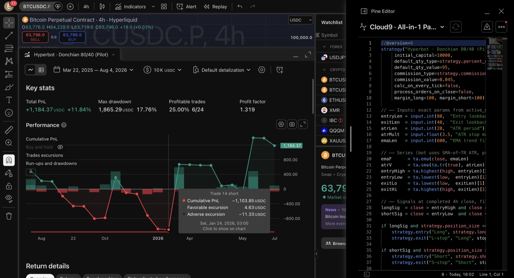
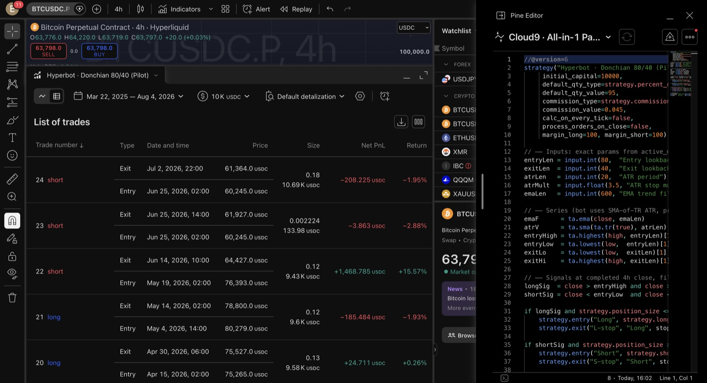

Describe a strategy in English. Claude backtests it in TradingView.
No Pine Script knowledge needed. You describe the rules — Claude Code writes the strategy, compiles it, runs TradingView's own Strategy Tester with real fees, and reads the results back to you: net profit, drawdown, profit factor, every single trade. All on your machine. Free.
🧠 English → Pine v6🧪 Strategy Tester💸 Real fees & fills📋 Trade list🛡️ Overfit audit
Proof — the exact run from the reel
🤖 My bitcoin bot's live strategy, verified in TradingView
My bot trades a Donchian breakout system on BTC (4h). One prompt made Claude port the exact rules to Pine, apply them to the Hyperliquid BTC perp chart, and run the tester over ~17 months — with taker fees and next-bar fills, no lookahead.
+11.8%
Net profit
+53.7%
vs buy & hold
1.32
Profit factor
24
Trades
25%
Win rate
17.8%
Max drawdown
A 25% win rate that still makes money is what trend-following really looks like: many small losses, a few huge winners (best trade: +15.6% in one short). BTC itself was down over this window — the strategy beat holding by 53.7%. No cherry-picking: full stats below.

TradingView's Strategy Tester: equity curve, PnL, drawdown — computed by TV, not by the AI.

Every trade with entry/exit time, price, size and PnL. This is the receipt.
Setup — 5 minutes, once
1 Get the two apps + the bridge
TradingView Desktop (the app, not the website — free account is fine) and Claude Code. Node.js 18+ if you don't have it. Then install the open-source MCP bridge:
git clone https://github.com/tradesdontlie/tradingview-mcp.git ~/tradingview-mcp
cd ~/tradingview-mcp && npm install
claude mcp add --scope user tradingview -- node ~/tradingview-mcp/src/server.js
Quit TradingView fully first (this matters — a normally-launched instance blocks the bridge). Then either ask Claude to run tv_launch, or start it yourself:
# macOS
open -a TradingView --args --remote-debugging-port=9222
Windows: run scripts\launch_tv_debug.bat from the repo. Verify with curl http://127.0.0.1:9222/json/version — it should print JSON.
3 Sanity check
New Claude Code session:
Use tv_health_check to verify TradingView is connected, then tell me what's on my chart.
The backtest prompt — copy, edit the rules, send
📝 The master prompt
This is the whole trick. Fill in your market, timeframe and rules in plain English — Claude handles Pine syntax, compiling, applying to the chart and reading the tester. The cost/fill lines at the bottom are what make the result honest; keep them.
Backtest this strategy in TradingView using the tradingview MCP tools:
MARKET: BINANCE:BTCUSDT.P TIMEFRAME: 4h
RULES
- Go LONG when the close breaks above the highest high of the
previous 80 bars AND the close is above the 600-bar EMA.
- Go SHORT when the close breaks below the lowest low of the
previous 80 bars AND the close is below the 600-bar EMA.
- EXIT a long when the close drops below the lowest low of the
previous 40 bars; mirror for shorts.
- Also protect every trade with a stop at 3.5 × ATR(20) from entry.
REALISM (keep these)
- Pine Script v6 strategy(), initial_capital = 10000,
95% of equity per position, commission 0.045% per side.
- Signals evaluate on CLOSED bars only and fill at the NEXT bar
open — no lookahead, no intrabar magic.
DO
1. Write the strategy, open the Pine editor, compile it, and add
it to the chart on that symbol + timeframe.
2. Open the Strategy Tester.
3. Report back: net profit %, max drawdown, profit factor,
win rate, total trades, average trade, and the 3 biggest
winners and losers with dates.
4. Screenshot the Strategy Tester panel.
If anything errors (compile error, panel not found, old TV
instance running), debug it yourself and continue.
Swap the rules for anything: "buy the pullback to the 20 EMA in an uptrend, stop under the last swing low, take profit at 2R" works exactly the same way. If you can say it, it can be tested.
⚙️ What Claude actually does with it
So you know what "working" looks like: it writes a Pine v6 strategy(), injects it into TradingView's Pine editor, hits compile, fixes its own compile errors, adds it to the chart, opens the Strategy Tester, and reads the Key stats + trade list straight off the panel. You watch it happen live on your chart — nothing is simulated outside TradingView.
The exact Pine strategy from the run above (if you want to paste it manually)
//@version=6
strategy("Donchian 80/40 Breakout", overlay=true,
initial_capital=10000,
default_qty_type=strategy.percent_of_equity,
default_qty_value=95,
commission_type=strategy.commission.percent,
commission_value=0.045,
calc_on_every_tick=false,
process_orders_on_close=false,
margin_long=100, margin_short=100)
entryLen = input.int(80, "Entry lookback (Donchian)")
exitLen = input.int(40, "Exit lookback (Donchian)")
atrLen = input.int(20, "ATR period")
atrMult = input.float(3.5, "ATR stop multiple")
emaLen = input.int(600, "EMA trend filter")
emaF = ta.ema(close, emaLen)
atrV = ta.sma(ta.tr(true), atrLen)
entryHigh = ta.highest(high, entryLen)[1]
entryLow = ta.lowest(low, entryLen)[1]
exitLo = ta.lowest(low, exitLen)[1]
exitHi = ta.highest(high, exitLen)[1]
longSig = close > entryHigh and close > emaF
shortSig = close < entryLow and close < emaF
if longSig and strategy.position_size <= 0
strategy.entry("Long", strategy.long)
strategy.exit("L-stop", "Long", stop=close - atrV * atrMult)
if shortSig and strategy.position_size >= 0
strategy.entry("Short", strategy.short)
strategy.exit("S-stop", "Short", stop=close + atrV * atrMult)
if strategy.position_size > 0 and close < exitLo
strategy.close("Long", comment="Donchian exit")
if strategy.position_size < 0 and close > exitHi
strategy.close("Short", comment="Donchian exit")
plot(entryHigh, "80-bar high", color.new(color.teal, 40))
plot(entryLow, "80-bar low", color.new(color.red, 40))
plot(emaF, "EMA filter", color.new(color.orange, 0), linewidth=2)
🛡️ Then make it attack its own result
A green backtest is a hypothesis, not a green light. Send this straight after:
Now audit this backtest like a skeptical quant. Check: trade count
(is 24 trades even significant?), whether performance came from 1-2
outlier trades, how sensitive results are if the lookbacks change
±20%, what the strategy does in a range vs a trend, costs I haven't
modeled (funding, slippage, gaps), and any way the test flatters
itself. Argue the bear case. Then tell me what you'd need to see
before trusting it with real money.
This is the difference between "AI made me a strategy" content and actually knowing what you own. My bot's own research pipeline rejected dozens of variants before promoting this one — one backtest proves nothing on its own.
Honesty checklist — read before you believe any backtest
Costs on. Commission + realistic fills (next-bar open) are in the prompt for a reason. A strategy that dies when you add 0.045% fees was never alive.
Closed bars only. Signals on the current, still-forming bar = lookahead bias = fantasy money.
Enough trades. Under ~30 trades the stats are noise. Zoom the timeframe down or the history back.
Don't tune until it's pretty. Every parameter you nudge to improve the past steals from the future. If small changes to a lookback flip profit to loss, you fit noise.
Perps caveat: TradingView doesn't model funding rates on perpetuals — on funding-heavy pairs the real result is a few % different. Test the spot pair as a cross-check.
Out-of-sample or it didn't happen. Ask Claude to re-run the same rules on a different symbol or an earlier date range it wasn't built on.
If something breaks
Honestly: paste the error into Claude and tell it to fix it — it can see the app and debug itself. The three snags that actually happen:
"CDP connection failed" → a normally-launched TradingView is still running. Quit it fully (macOS: ⌘Q, check the Dock), relaunch in debug mode.
"Could not open Pine Editor" → your Pine editor is docked to the side. Click its ⇱ icon to move it back to the bottom panel — or just tell Claude, it can work around it.
Existing scripts: if the editor has one of your saved scripts open, tell Claude to create a new script or "Make a copy" first so it never saves over your work.
Watched the bot get verified live?
Next up on @cloud9.markets: what happens when the backtested strategy runs for real. Follow so you don't miss the live results.